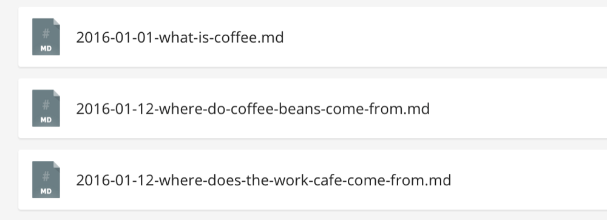

Конвертация статичного сайта в Jekyll
Установка Jekyll
Jekyll является инструментом командной строки, которая должна быть установлена перед использованием.
OS X
$ gem install jekyll -v 2.4.0Ubuntu
$ apt-get install ruby ruby-dev make gcc nodejs
$ gem install jekyll -v 2.4.0Windows
Windows официально не поддерживается, но есть обходной путь.
Настройка
Скачайте исходные файлы для Coffee Cafe, если вы хотите следовать вместе с нами.
Запустите Jekyll для создания и обслуживания сайта. Перейдите в рабочую папку в терминале и выполните команду:
$ cd path/to/site/files
$ jekyll servejekyll serve строит статичный сайт внутри _site в той же папке и запускает локальный веб-сервер. Перейдите в вашем браузере по адресу http://localhost:4000 для просмотра Coffee Cafe.
Макеты в Jekyll
Повторение содержимого является самой большой нервотрёпкой для чисто статичного сайта. Макеты Jekyll решают эту проблему. Макет представляет собой HTML-файл в папке _layouts с шаблоном для содержимого.
Создание макета
На каждой странице Coffee Cafe меняются только элементы <div.content> и <title>. Самым простым способом создания макета является копирование существующего файла HTML. Скопируйте index.html в _layouts/default.html и замените содержимое div.content на {{ content }}.
HTML
</header>
<div class="content">
{{ content }}
</div>
<footer>{{ content }} представляет собой тег Liquid, который является частью языка шаблонов Jekyll.
Настройка макета
Чтобы задать index.html в качестве макета по умолчанию мы используем вступление — фрагмент YAML вверху файла между строк из трёх дефисов.
Чтобы установить макет index.html:
- обновите файл, чтобы он включал только содержимое div.content;
- добавьте layout: default во вступление.
index.html (с YAML)
---
layout: default
---
<section class="hero">...</section>
<div class="container">...</div>
<section class="cta">...</section>Главная страница генерируется с макетом по умолчанию и показывает содержимое файла вместо {{ content }}. Сайт должен выглядеть так же, как и раньше. Повторите тот же процесс для всех остальных HTML-файлов.
Использование переменных страниц
Чтобы настроить <title> для каждой страницы, мы задаём переменную во вступлении на каждой странице и используем эту переменную в макете. Добавьте переменную title в index.html:
index.html
---
layout: default
title: Home
---
...Выведем переменную в _layout/default.html через Liquid:
HTML
...
<title>{{ page.title }}</title>
...Тег заголовка теперь меняется на каждой странице. Это уменьшает ненужное дублирование на сайте, потому что вы делаете будущие изменения в одном месте.
Ведение блога
Добавление статей блога почти такой же процесс, что и добавление страниц. Статьи представляют собой Markdown или HTML-файлы в папке _posts в таком формате: год-месяц-день-заголовок.расширение.

Формат файла для статей блога
Написание статей
Содержимое статей блога такое же, что у страницы — вступление и содержимое файла. Создайте файл с именем _posts/2016-01-01-what-is-coffee.md, затем добавьте вступление перед содержимым статьи.
post.md
---
layout: post
title: What is Coffee?
category: Information
---
Coffee is a brewed drink prepared from roasted coffee beans, which are the seeds of berries from the Coffea plant. The Coffea plant is native to subtropical Africa and some islands in southern Asia. The plant was exported from Africa to countries around the world and coffee plants are now cultivated in over 70 countries, primarily in the equatorial regions of the Americas, Southeast Asia, India, and Africa. The two most commonly grown are the highly regarded arabica, and the less sophisticated but stronger and more hardy robusta. Once ripe, coffee beans are picked, processed, and dried. Green (unroasted) coffee beans are one of the most traded agricultural commodities in the world. Once traded, the coffee beans are roasted to varying degrees, depending on the desired flavor. Roasted beans are ground and brewed to produce coffee as a beverage.
Source / Read more [Wikipedia](https://en.wikipedia.org/wiki/Coffee).Такое разделение разметки и данных является основой философии Jekyll. Это позволяет повторно использовать содержимое в любом месте сайта.
Создание макета статьи
В приведённом выше примере используется новый макет с названием post. Этот макет расширит макет по умолчанию и добавит специфичные элементы статьи, такие как дата публикации и категории. Чтобы получить такое в Jekyll, указываем макет внутри макета. Скопируйте следующий код в _layouts/post.html:
post.html
---
layout: default
---
<div class="container">
<h2 class="spacing">{{ page.title }}</h2>
<div class="blog-post spacing">
<p class="summary">{{ page.category }}<span class="date">{{ page.date | date: '%B %d, %Y' }}</span></p>
{{ content }}
</div>
</div>С помощью Liquid мы выводим каждую переменную из вступления, так же, как мы выводим заголовок выше. Переменная с датой форматируется с помощью фильтра Liquid.
Список статей
Последним шагом является список статей блога в blog.html. С помощью цикла for в Liquid создаём элемент для каждой статьи в site.posts:
blog.html
---
layout: default
title: Blog
---
<div class="container">
<h2 class="spacing">Blog</h2>
<div class="blog-posts">
{% for post in site.posts %}
<div class="blog-post spacing">
<h3><a href="{{ post.url }}">{{ post.title }}</a></h3>
<p class="summary">
{{ post.category }}
<span class="date">
{{ post.date | date: '%B %d, %Y' }}
</span>
</p>
{{ post.excerpt }}
</div>
{% endfor %}
</div>
</div>Jekyll поддерживает используемые здесь встроенные переменные, которые не определены в вводной части:
- url — это сгенерированный адрес статьи блога, который обычно выглядит как /категории/год/месяц/день/заголовок.html, но есть много вариантов настроек;
- excerpt — это отрывок, который берётся с самого начала содержимого статьи;
- content здесь не используется, но он отображает всё содержимое статьи, так же как {{ content }} в макетах.
Всё готово
За несколько минут мы перешли от статичного сайта к сайту на Jekyll с блогом. Вот ссылка для скачивания финального сайта Coffee Cafe на Jekyll.